<title>UGG Style Figures</title>
<meta name="claude:viewport-fit-sides" content="cover">
<link rel="stylesheet" href="https://fonts.googleapis.com/css2?family=Space+Grotesk:wght@500;600;700&family=IBM+Plex+Sans:wght@400;500;600&family=IBM+Plex+Mono:wght@400;500&display=swap">
<style>
  /* Layout: a centred project-page column (UGG's page conventions); each figure sits in a framed figbox, with a
     toggle for side by side / current only / UGG style only. Stream colours are the four used in the new figures. */
  :root {
    --bg: #ffffff; --surface: #f7f7f9; --surface-2: #ececef; --line: #e3e3e6; --text: #15171a; --dim: #5b6169;
    --s-rgb: #809ec2; --s-depth: #e0b020; --s-pc: #d091a7; --s-text: #9d8cc4; --focus: #3f5f8f;
    --display: "Space Grotesk", ui-sans-serif, system-ui, sans-serif;
    --body: "IBM Plex Sans", ui-sans-serif, system-ui, sans-serif;
    --mono: "IBM Plex Mono", ui-monospace, Menlo, monospace;
  }
  @media (prefers-color-scheme: dark) { :root:not([data-theme="light"]) {
    --bg: #111214; --surface: #1a1b1e; --surface-2: #26272b; --line: #2e3035; --text: #ececef; --dim: #a3a8b0; --focus: #a9c0e0; color-scheme: dark } }
  :root[data-theme="dark"] {
    --bg: #111214; --surface: #1a1b1e; --surface-2: #26272b; --line: #2e3035; --text: #ececef; --dim: #a3a8b0; --focus: #a9c0e0; color-scheme: dark }
  * { box-sizing: border-box; }
  body { margin: 0; background: var(--bg); color: var(--text); font-family: var(--body); font-size: 16px; line-height: 1.6;
         padding-left: max(16px, env(safe-area-inset-left, 0px)); padding-right: max(16px, env(safe-area-inset-right, 0px)); }
  main { max-width: 1240px; margin: 0 auto; padding-block: 56px 88px; display: grid; gap: 64px; }
  h1, h2 { font-family: var(--display); font-weight: 600; margin: 0; text-align: center; text-wrap: balance; letter-spacing: -0.01em; }
  h1 { font-size: clamp(32px, 5vw, 50px); line-height: 1.08; }
  h2 { font-size: clamp(22px, 2.8vw, 30px); line-height: 1.2; }
  h2::before { content: ""; display: block; width: 44px; height: 3px; border-radius: 2px; margin: 0 auto 16px;
               background: linear-gradient(90deg, var(--s-rgb), var(--s-depth), var(--s-pc), var(--s-text)); }
  p { margin: 0 auto; max-width: 70ch; text-align: center; color: var(--dim); }
  .k { font-family: var(--mono); font-size: 12px; letter-spacing: .12em; text-transform: uppercase; color: var(--dim); text-align: center; }
  header { display: grid; gap: 14px; }
  .bar { display: flex; justify-content: center; position: sticky; top: env(safe-area-inset-top, 0px); z-index: 5; padding-block: 10px;
         background: color-mix(in srgb, var(--bg) 88%, transparent); backdrop-filter: blur(8px); }
  body::before { content: ""; position: fixed; inset: 0 0 auto; height: env(safe-area-inset-top, 0px); z-index: 10; background: var(--bg); }
  .seg { display: inline-flex; flex-wrap: wrap; justify-content: center; border: 1px solid var(--line); border-radius: 9px; padding: 3px; background: var(--bg); }
  .seg button { font-family: var(--mono); font-size: 12.5px; padding: 8px 15px; border-radius: 6px; border: 0; background: transparent; color: var(--dim); cursor: pointer; }
  .seg button[aria-pressed="true"] { background: var(--surface-2); color: var(--text); }
  .seg button:focus-visible { outline: 2px solid var(--focus); outline-offset: 2px; }
  section { display: grid; gap: 18px; }
  .pair { display: grid; gap: 18px; grid-template-columns: minmax(0, 1fr); }
  body[data-mode="both"] .pair { grid-template-columns: minmax(0, 1fr) minmax(0, 1fr); }
  @media (max-width: 900px) { body[data-mode="both"] .pair { grid-template-columns: minmax(0, 1fr); } }
  figure { margin: 0; display: grid; gap: 10px; min-width: 0; align-content: start; }
  .figbox { border: 1px solid var(--line); border-radius: 14px; padding: 16px; background: #ffffff; box-shadow: 0 18px 40px -30px rgba(0,0,0,.35); }
  .figbox img { display: block; width: 100%; max-width: 100%; height: auto; border-radius: 5px; }
  figcaption { font-family: var(--mono); font-size: 12px; letter-spacing: .06em; color: var(--dim); text-align: center; }
  figure.ugg figcaption { color: var(--text); }
  body[data-mode="paper"] figure.ugg, body[data-mode="ugg"] figure.paper { display: none; }
  .legend { display: flex; flex-wrap: wrap; justify-content: center; gap: 8px 18px; font-size: 14px; color: var(--dim); }
  .sw { display: inline-block; width: 14px; height: 14px; border-radius: 4px; vertical-align: -2px; margin-right: 6px; border: 1.5px solid; }
  .notes { background: var(--surface); border: 1px solid var(--line); border-radius: 14px; padding: 24px; display: grid; gap: 12px; }
  .notes ul { margin: 0 auto; padding-left: 20px; display: grid; gap: 6px; max-width: 80ch; color: var(--dim); }
  .group { border-top: 1px solid var(--line); padding-top: 28px; margin-top: 8px; }
  .group .k { font-size: 13px; }
</style>

<main>
  <header>
    <div class="k">CropCode · paper figures · previews</div>
    <h1>Our figures with ideas from the UGG paper</h1>
    <p>Every main-body figure, current paper version beside a version that borrows the figure conventions of <i>UGG: Unified Generative Geometry Model</i> (ugg-paper.pdf). Fonts, sizes, data, plants and numbers are unchanged. Nothing has been swapped into the paper yet.</p>
    <div class="legend" aria-label="Stream colours">
      <span><i class="sw" style="background:#e6ecf3;border-color:#809ec2"></i>Image</span>
      <span><i class="sw" style="background:#faf2d4;border-color:#e0b020"></i>Depth image</span>
      <span><i class="sw" style="background:#f6e9ed;border-color:#d091a7"></i>Point cloud</span>
      <span><i class="sw" style="background:#eae7f2;border-color:#9d8cc4"></i>Procedural parameters</span>
      <span><i class="sw" style="background:#6a2fd6;border-color:#6a2fd6"></i>Ours (highlight)</span>
    </div>
  </header>
  <div class="bar"><div class="seg" id="mode" role="group" aria-label="Which version to show">
    <button type="button" data-v="both" aria-pressed="true">Side by side</button>
    <button type="button" data-v="paper" aria-pressed="false">Current paper</button>
    <button type="button" data-v="ugg" aria-pressed="false">UGG ideas</button>
  </div></div>
  <div class="group" id="diagrams"><div class="k">Diagrams</div></div>
  <section aria-labelledby="h-fig-teaser">
    <h2 id="h-fig-teaser">Fig. 1 · Teaser</h2>
    <p>Observation in, procedural parameters out. The output is shown only as procedural parameters, drawn as in the any-input-to-all figure: the recipe CropCode writes in purple over the true one in grey, no value text. The middle header reads "Model". Wide layout: both species in one row, so at text width it is 46 % of the current height (129 vs 278 pt). From UGG's Fig. 1: a dashed input box, a model block with a soft gradient through the four stream colours, and one grey frame around everything the model writes. Same plants, numbers and Helvetica text.</p>
    <div class="pair">
      <figure class="paper"><div class="figbox">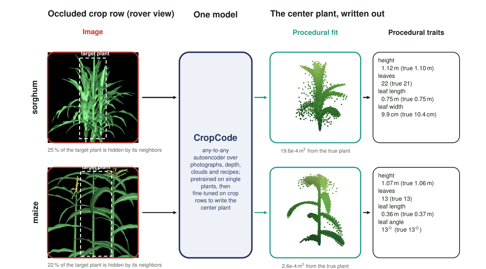</div><figcaption>Current paper</figcaption></figure>
      <figure class="ugg"><div class="figbox">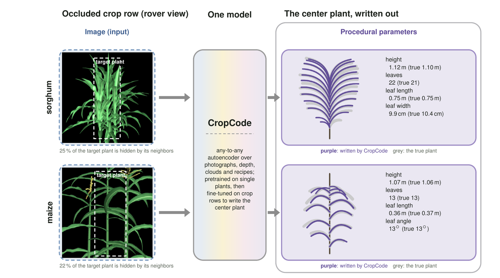</div><figcaption>UGG ideas, our font</figcaption></figure>
    </div>
  </section>
  <section aria-labelledby="h-fig2-stages">
    <h2 id="h-fig2-stages">Fig. 2 · Three training stages</h2>
    <p><strong>In the paper now:</strong> the Stage 2 and Stage 3 before/after panels show the procedural model the network writes instead of a point cloud. The true parameters are drawn in light grey underneath, so any grey that shows is error. Labels give parameter error from the paper's tables: from one RGB photograph, 0.058 before distillation and 0.014 after (Table 8); on crop rows with all streams, leaf-parameter error 0.114 zero-shot and 0.061 after row fine-tuning (Table 7). Same sorghum plant and row as before; Stage 1 is unchanged.</p>
    <div class="pair">
      <figure class="paper"><div class="figbox">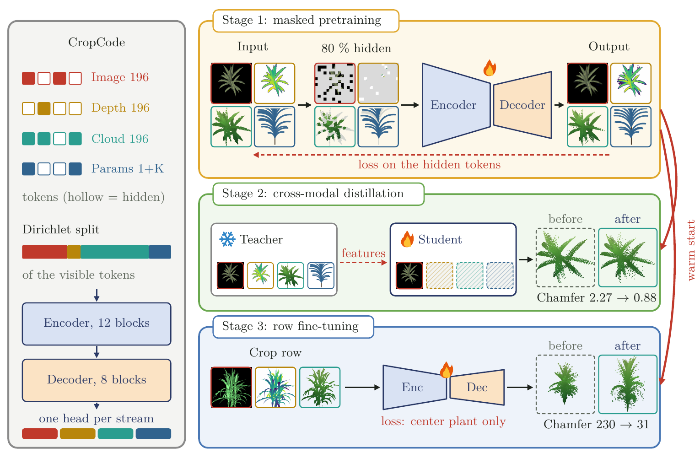</div><figcaption>Previous (point clouds, Chamfer)</figcaption></figure>
      <figure class="ugg"><div class="figbox">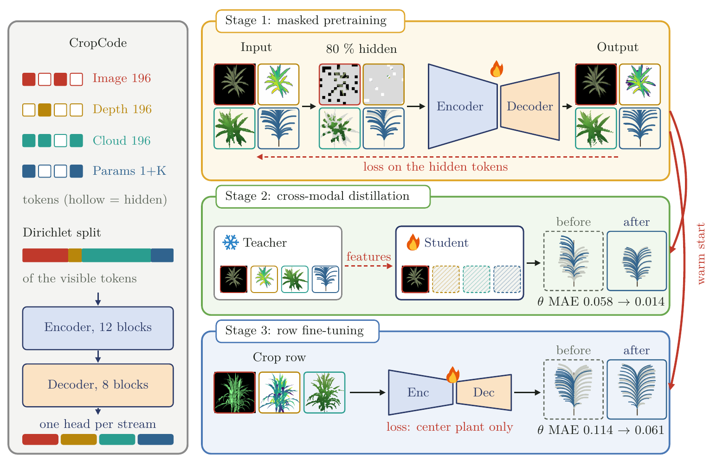</div><figcaption>In the paper now (procedural models, parameter MAE)</figcaption></figure>
    </div>
  </section>
  <div class="group" id="qualitative-grids"><div class="k">Qualitative grids</div></div>
  <section aria-labelledby="h-fig-dataset-v2">
    <h2 id="h-fig-dataset-v2">Fig. 3 · The data, new design</h2>
    <p>Built after Figs. 1 and 2 of Slice-100K and FlowBench, in the UGG style: (a) a gallery of 6 plants per species, the boxed plant joined by grey leader lines to (b) its view laid out as the four streams, named once above the columns; (c) five of the ten cameras and (d) one crop-row scene per species in a compact bottom strip. 3.86 in tall instead of 5.9 in.</p>
    <div class="pair">
      <figure class="paper"><div class="figbox">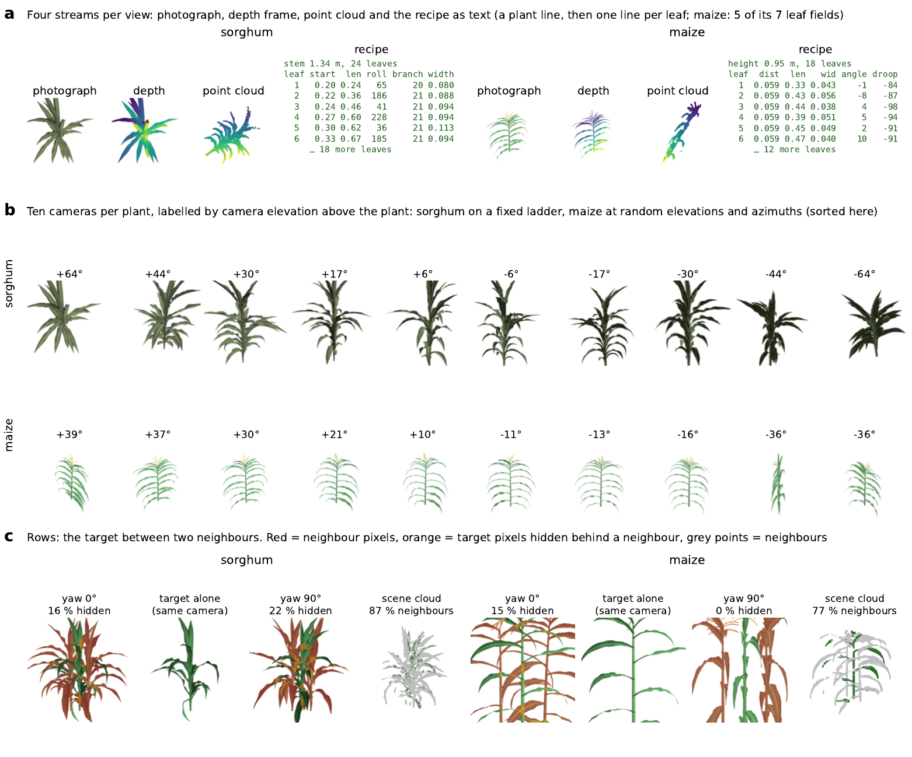</div><figcaption>Current paper</figcaption></figure>
      <figure class="ugg"><div class="figbox">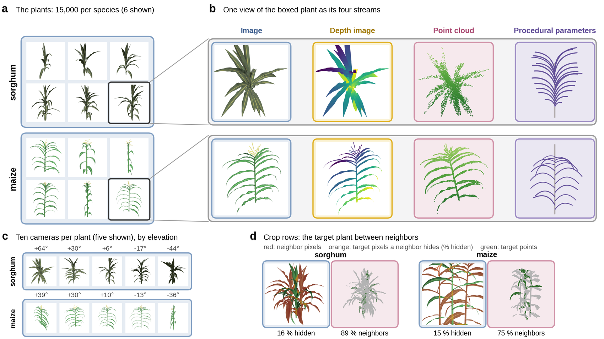</div><figcaption>New design (Slice-100K / FlowBench layout, UGG style)</figcaption></figure>
    </div>
  </section>
  <section aria-labelledby="h-fig-dataset">
    <h2 id="h-fig-dataset">Fig. 3 · The data</h2>
    <p>Bold headers and row labels; stream tiles in their colours.</p>
    <div class="pair">
      <figure class="paper"><div class="figbox"></div><figcaption>Current paper</figcaption></figure>
      <figure class="ugg"><div class="figbox">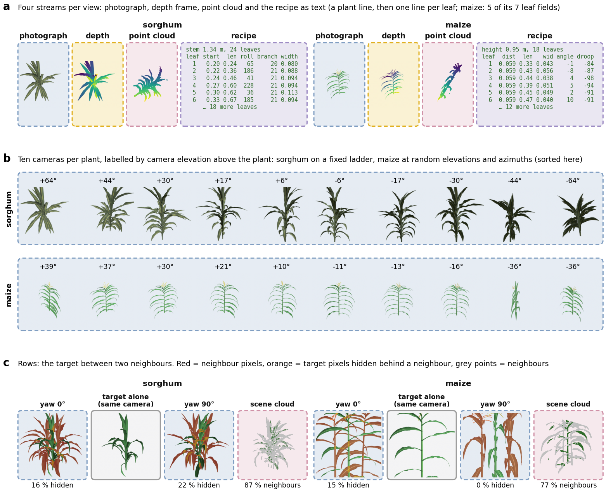</div><figcaption>UGG ideas, our font</figcaption></figure>
    </div>
  </section>
  <section aria-labelledby="h-fig-any2all-maize">
    <h2 id="h-fig-any2all-maize">Any input to all · maize</h2>
    <p>One dashed input, grey arrow, three solid outputs, each in its stream colour.</p>
    <div class="pair">
      <figure class="paper"><div class="figbox">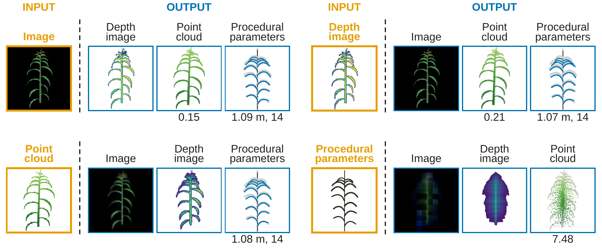</div><figcaption>Current paper</figcaption></figure>
      <figure class="ugg"><div class="figbox">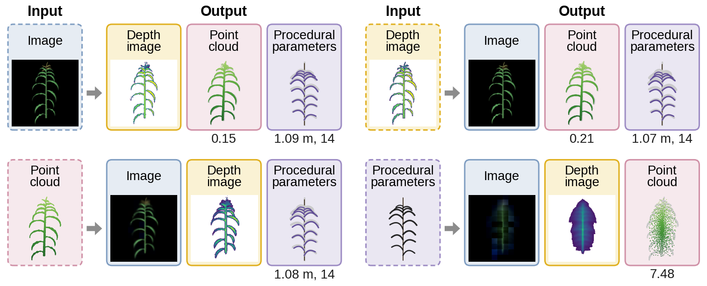</div><figcaption>UGG ideas, our font</figcaption></figure>
    </div>
  </section>
  <section aria-labelledby="h-fig-rows-examples">
    <h2 id="h-fig-rows-examples">Fig. 5 · Crop-row examples</h2>
    <p><b>In the paper now: procedural models.</b> Same plants and the same row-trained predictions as before (rerun with the same seeds; every Chamfer value reproduced). The ground-truth column draws the center plant's true procedural model; the row-trained column draws the model the network writes (purple) over the truth (grey), with its leaf-parameter MAE (normalised fields, the error of Table 7; lower is better).</p>
    <div class="pair">
      <figure class="paper"><div class="figbox">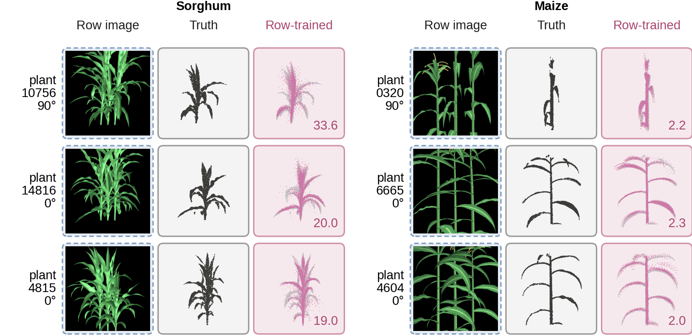</div><figcaption>Previous (point clouds, CD)</figcaption></figure>
      <figure class="ugg"><div class="figbox">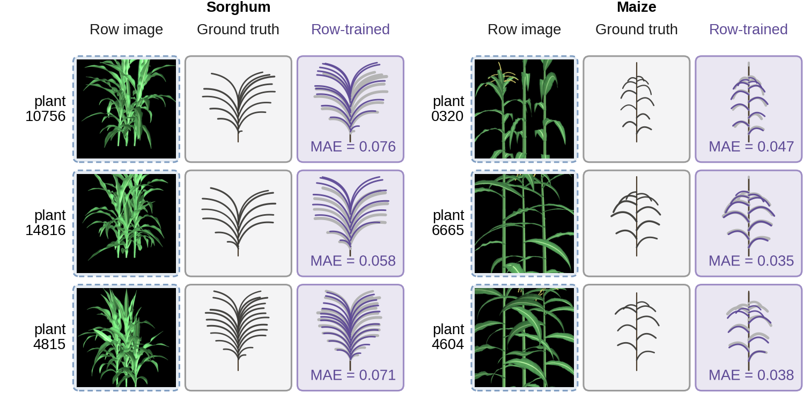</div><figcaption>In the paper now (procedural models, MAE)</figcaption></figure>
    </div>
  </section>
  <section aria-labelledby="h-fig-qual">
    <h2 id="h-fig-qual">Photograph to plant</h2>
    <p>Bold headers, the distilled model as 'Ours' in violet, stream boxes.</p>
    <div class="pair">
      <figure class="paper"><div class="figbox">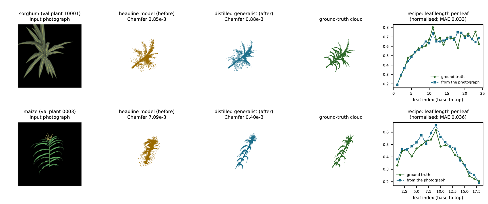</div><figcaption>Current paper</figcaption></figure>
      <figure class="ugg"><div class="figbox">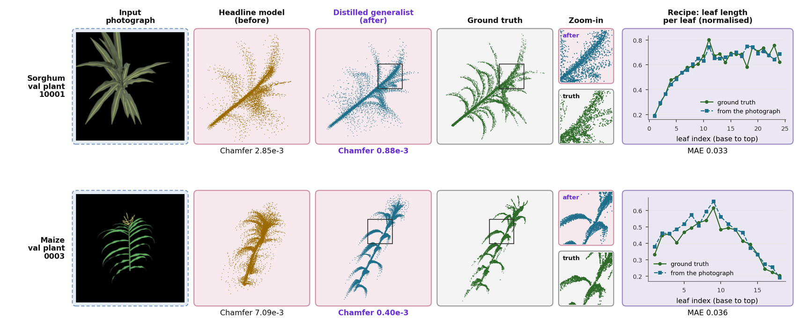</div><figcaption>UGG ideas, our font</figcaption></figure>
    </div>
  </section>
  <section aria-labelledby="h-fig-any2all-sorghum">
    <h2 id="h-fig-any2all-sorghum">Any input to all · sorghum</h2>
    <p>As the maize version.</p>
    <div class="pair">
      <figure class="paper"><div class="figbox">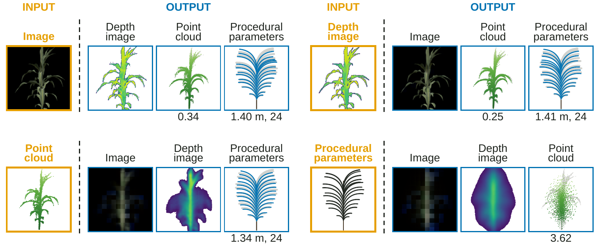</div><figcaption>Current paper</figcaption></figure>
      <figure class="ugg"><div class="figbox">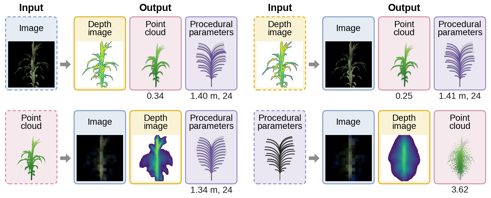</div><figcaption>UGG ideas, our font</figcaption></figure>
    </div>
  </section>
  <section aria-labelledby="h-fig-e10-real">
    <h2 id="h-fig-e10-real">E10 · real maize rows</h2>
    <p>Bold headers, the real-row fine-tune highlighted as ours.</p>
    <div class="pair">
      <figure class="paper"><div class="figbox">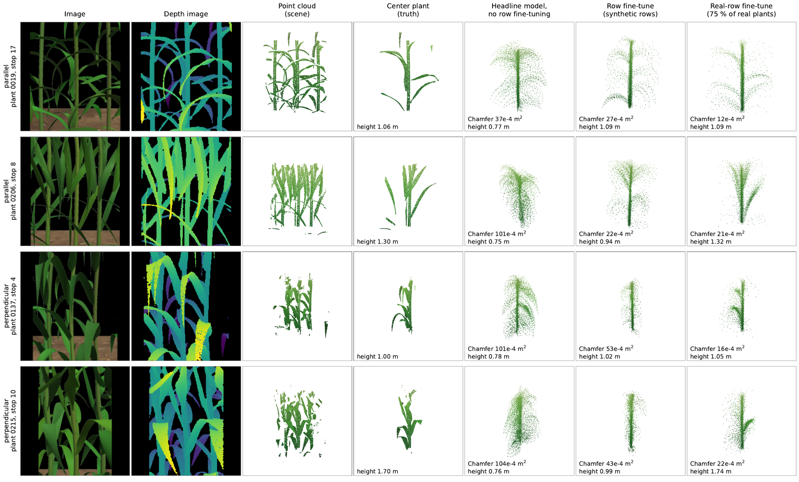</div><figcaption>Current paper</figcaption></figure>
      <figure class="ugg"><div class="figbox">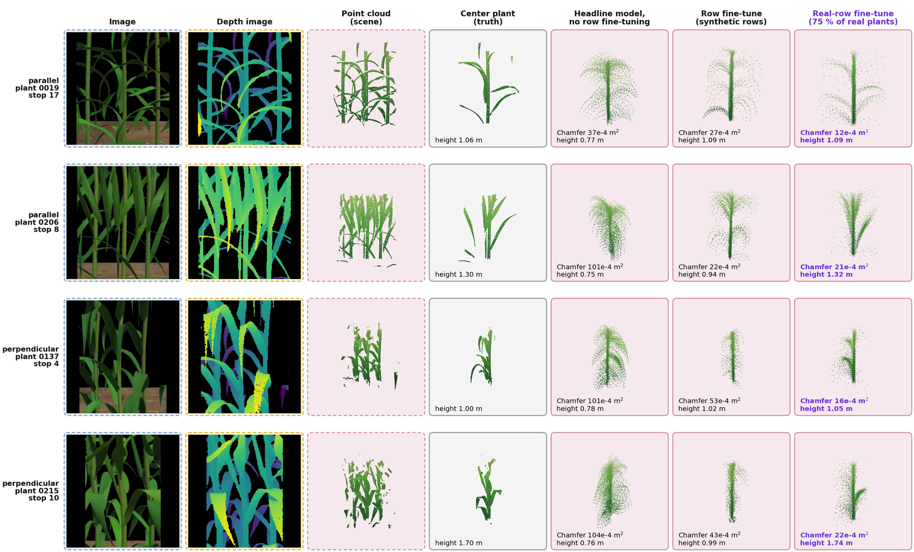</div><figcaption>UGG ideas, our font</figcaption></figure>
    </div>
  </section>
  <section aria-labelledby="h-fig-e10-real-sorghum">
    <h2 id="h-fig-e10-real-sorghum">E10 · real sorghum rows</h2>
    <p>As the maize version.</p>
    <div class="pair">
      <figure class="paper"><div class="figbox">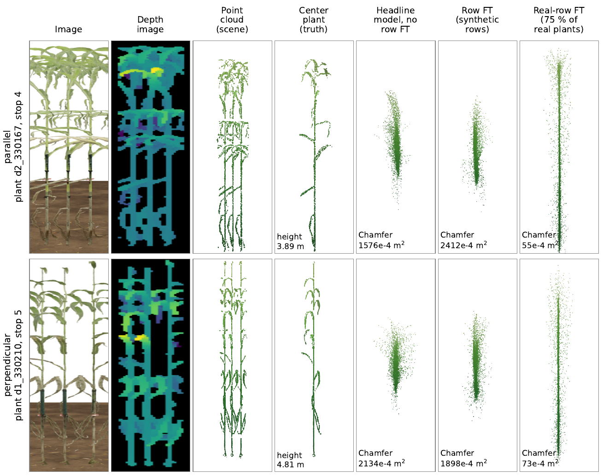</div><figcaption>Current paper</figcaption></figure>
      <figure class="ugg"><div class="figbox">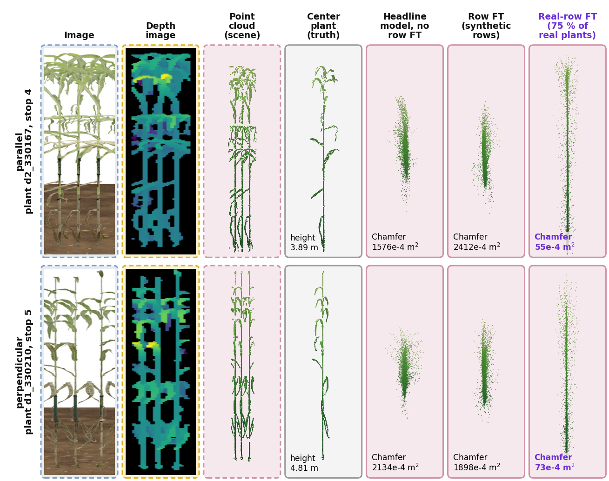</div><figcaption>UGG ideas, our font</figcaption></figure>
    </div>
  </section>
  <div class="group" id="plots"><div class="k">Plots</div></div>
  <section aria-labelledby="h-fig-e5-views">
    <h2 id="h-fig-e5-views">E5 · view regimes</h2>
    <p>Hollow markers, legend on top, light grid.</p>
    <div class="pair">
      <figure class="paper"><div class="figbox">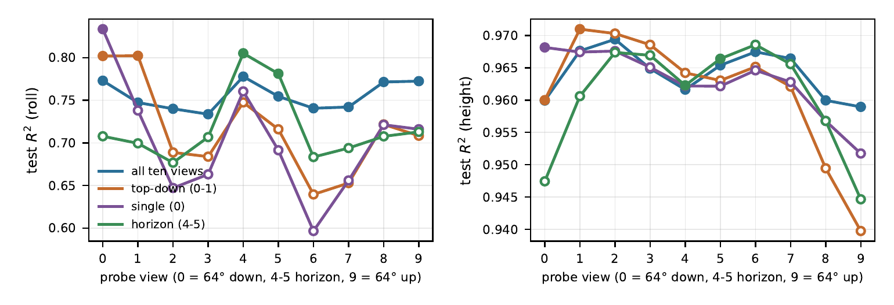</div><figcaption>Current paper</figcaption></figure>
      <figure class="ugg"><div class="figbox">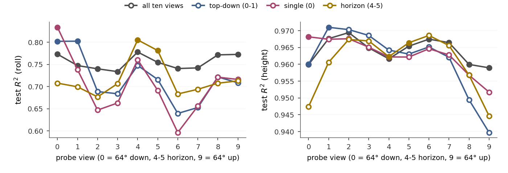</div><figcaption>UGG ideas, our font</figcaption></figure>
    </div>
  </section>
  <section aria-labelledby="h-fig-partial-clouds">
    <h2 id="h-fig-partial-clouds">Partial clouds</h2>
    <p>Arms in the stream colours; refit solid, transferred probe dashed.</p>
    <div class="pair">
      <figure class="paper"><div class="figbox">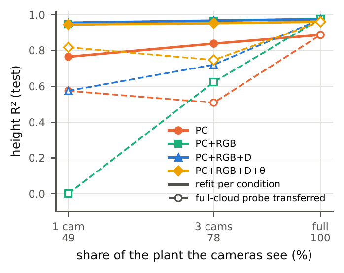</div><figcaption>Current paper</figcaption></figure>
      <figure class="ugg"><div class="figbox">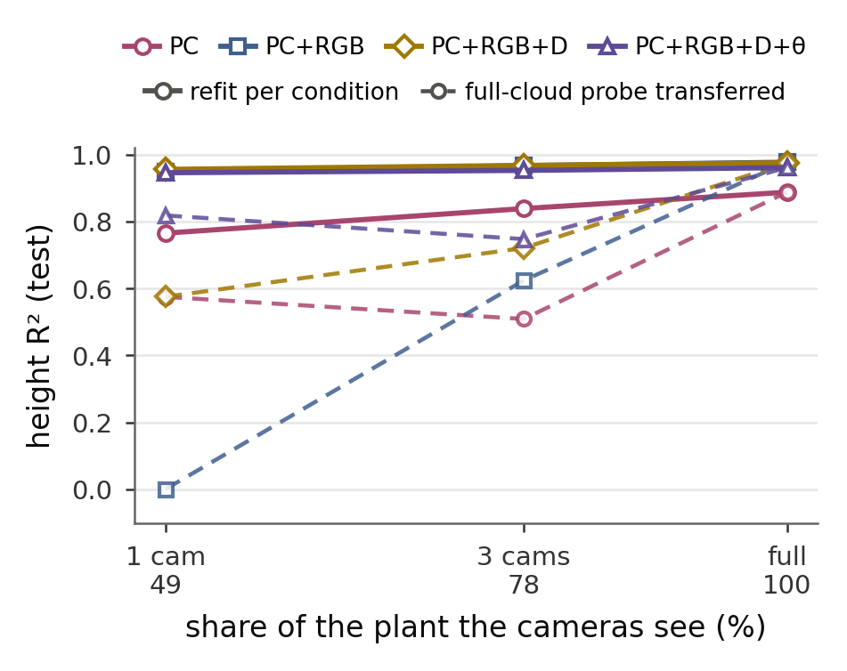</div><figcaption>UGG ideas, our font</figcaption></figure>
    </div>
  </section>
  <section aria-labelledby="h-fig-leafcount">
    <h2 id="h-fig-leafcount">Leaf count</h2>
    <p>Before in grey, the distilled model after in violet.</p>
    <div class="pair">
      <figure class="paper"><div class="figbox">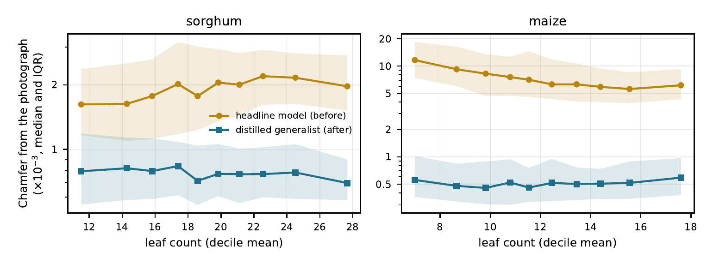</div><figcaption>Current paper</figcaption></figure>
      <figure class="ugg"><div class="figbox">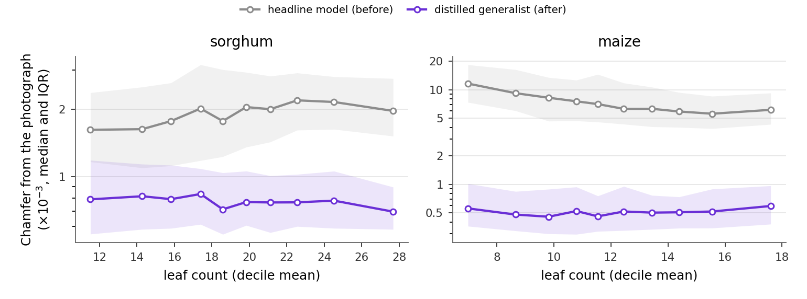</div><figcaption>UGG ideas, our font</figcaption></figure>
    </div>
  </section>
  <section aria-labelledby="h-fig-rows">
    <h2 id="h-fig-rows">Crop rows · Chamfer</h2>
    <p>Row-trained model in violet, baselines in greys, legend on top.</p>
    <div class="pair">
      <figure class="paper"><div class="figbox">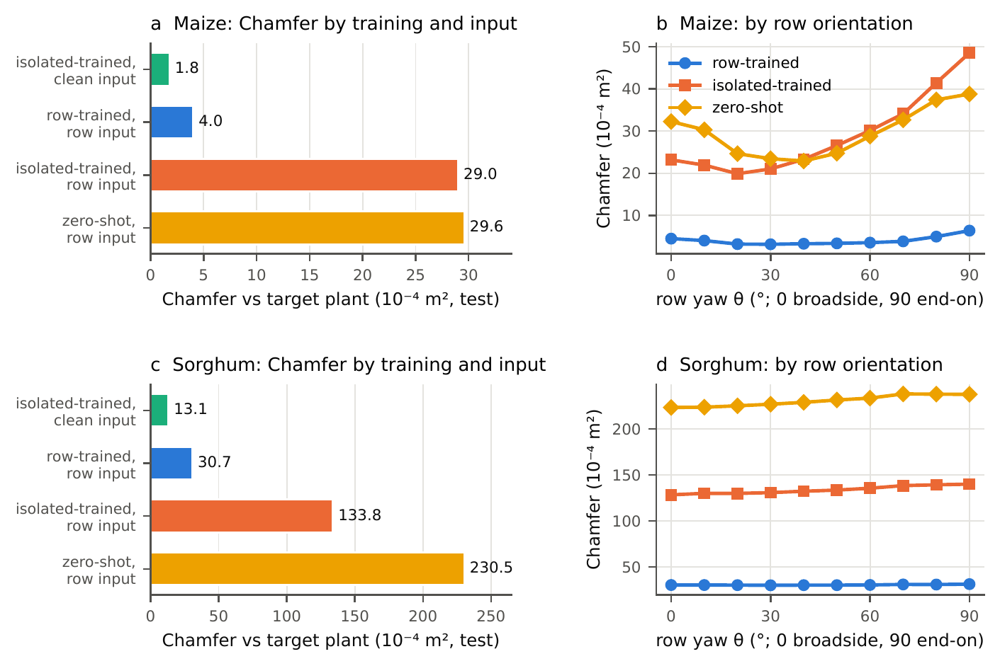</div><figcaption>Current paper</figcaption></figure>
      <figure class="ugg"><div class="figbox">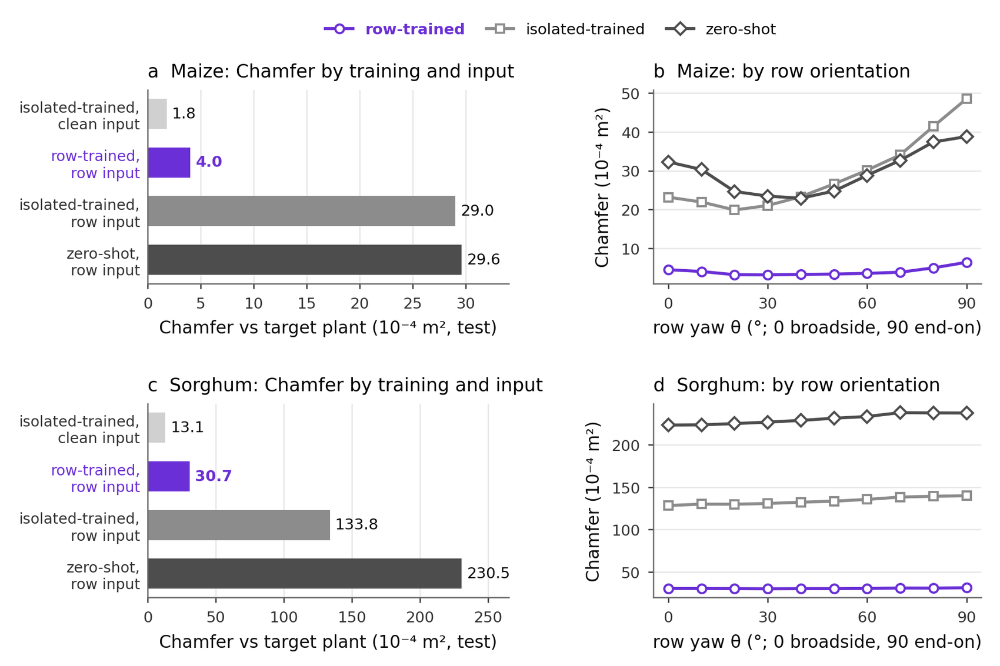</div><figcaption>UGG ideas, our font</figcaption></figure>
    </div>
  </section>
  <section aria-labelledby="h-fig-e2-streams">
    <h2 id="h-fig-e2-streams">E2 · what each stream adds</h2>
    <p>Each stream set takes the colour of the stream it adds: PC pink, +RGB blue, +D gold, +recipe purple.</p>
    <div class="pair">
      <figure class="paper"><div class="figbox">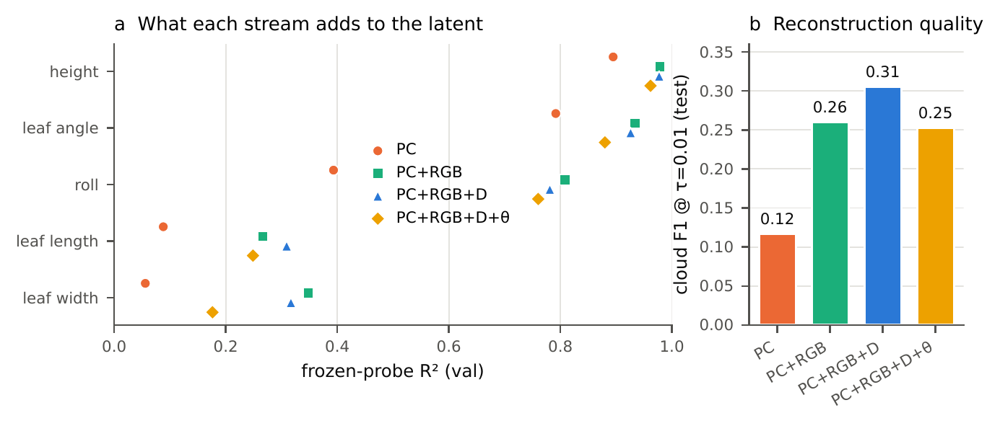</div><figcaption>Current paper</figcaption></figure>
      <figure class="ugg"><div class="figbox">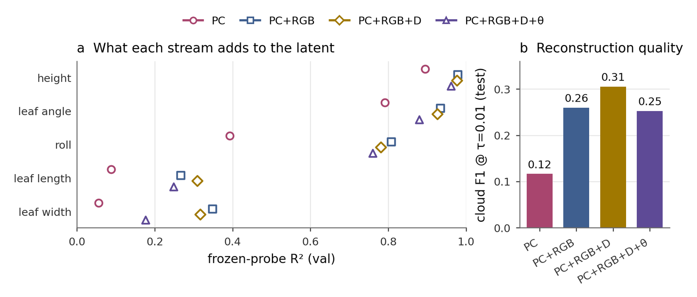</div><figcaption>UGG ideas, our font</figcaption></figure>
    </div>
  </section>
  <section aria-labelledby="h-fig-param-controls">
    <h2 id="h-fig-param-controls">Recipe-stream controls</h2>
    <p>Flat bars, one-row legend on top.</p>
    <div class="pair">
      <figure class="paper"><div class="figbox">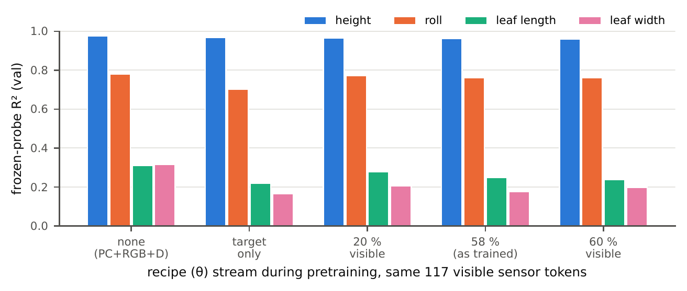</div><figcaption>Current paper</figcaption></figure>
      <figure class="ugg"><div class="figbox">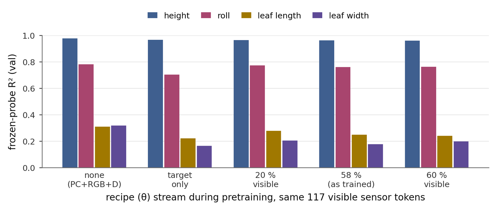</div><figcaption>UGG ideas, our font</figcaption></figure>
    </div>
  </section>
  <section aria-labelledby="h-fig-metrics">
    <h2 id="h-fig-metrics">Chamfer vs probe</h2>
    <p>UGG plot conventions; same points.</p>
    <div class="pair">
      <figure class="paper"><div class="figbox">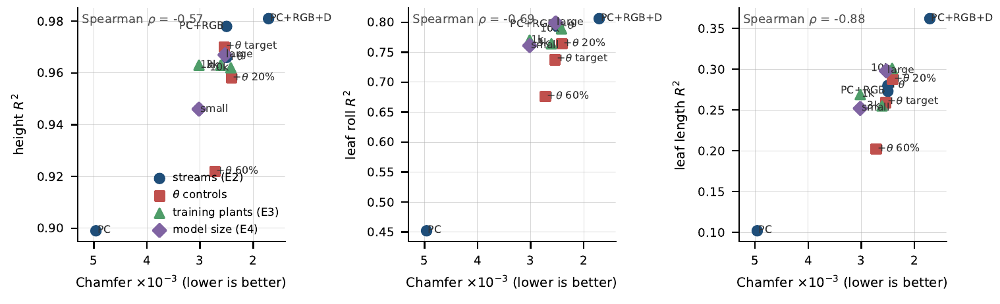</div><figcaption>Current paper</figcaption></figure>
      <figure class="ugg"><div class="figbox">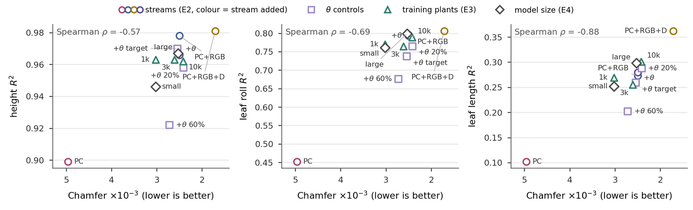</div><figcaption>UGG ideas, our font</figcaption></figure>
    </div>
  </section>
  <section aria-labelledby="h-fig-fscore">
    <h2 id="h-fig-fscore">Point-cloud F1</h2>
    <p>E1 in violet with its first and last values in bold on the axis; P = R as a dashed reference.</p>
    <div class="pair">
      <figure class="paper"><div class="figbox">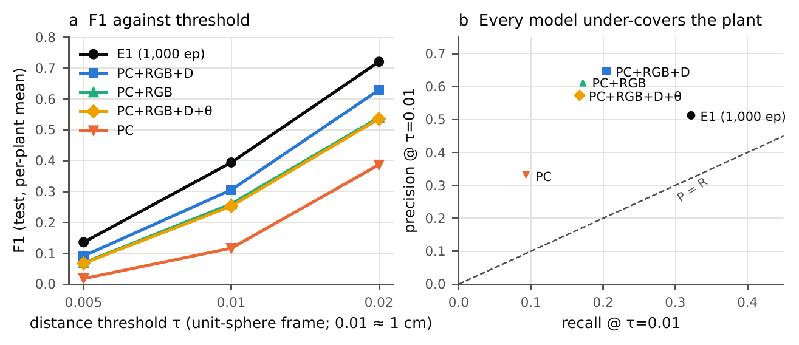</div><figcaption>Current paper</figcaption></figure>
      <figure class="ugg"><div class="figbox">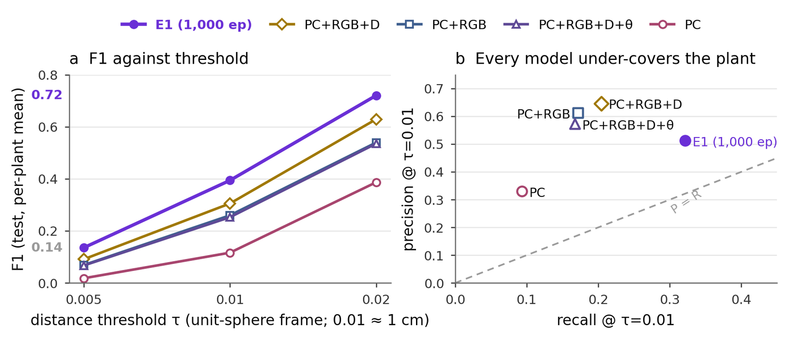</div><figcaption>UGG ideas, our font</figcaption></figure>
    </div>
  </section>
  <section aria-labelledby="h-fig-e10-height">
    <h2 id="h-fig-e10-height">E10 · plant height</h2>
    <p>Reference lines dashed grey; the real-row fine-tune in violet.</p>
    <div class="pair">
      <figure class="paper"><div class="figbox">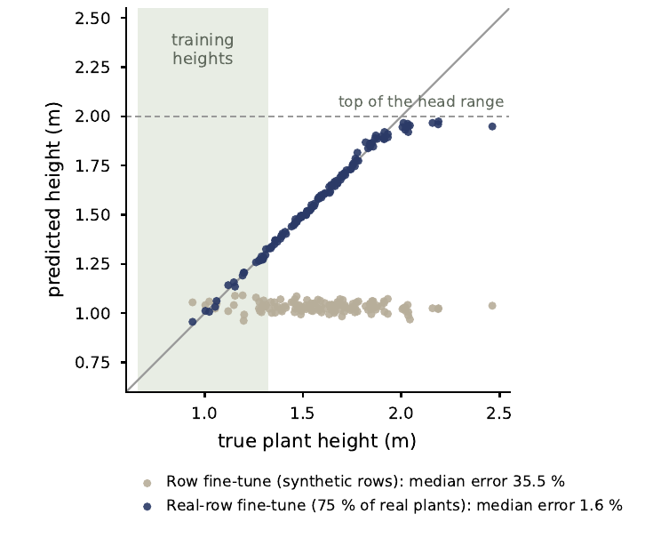</div><figcaption>Current paper</figcaption></figure>
      <figure class="ugg"><div class="figbox">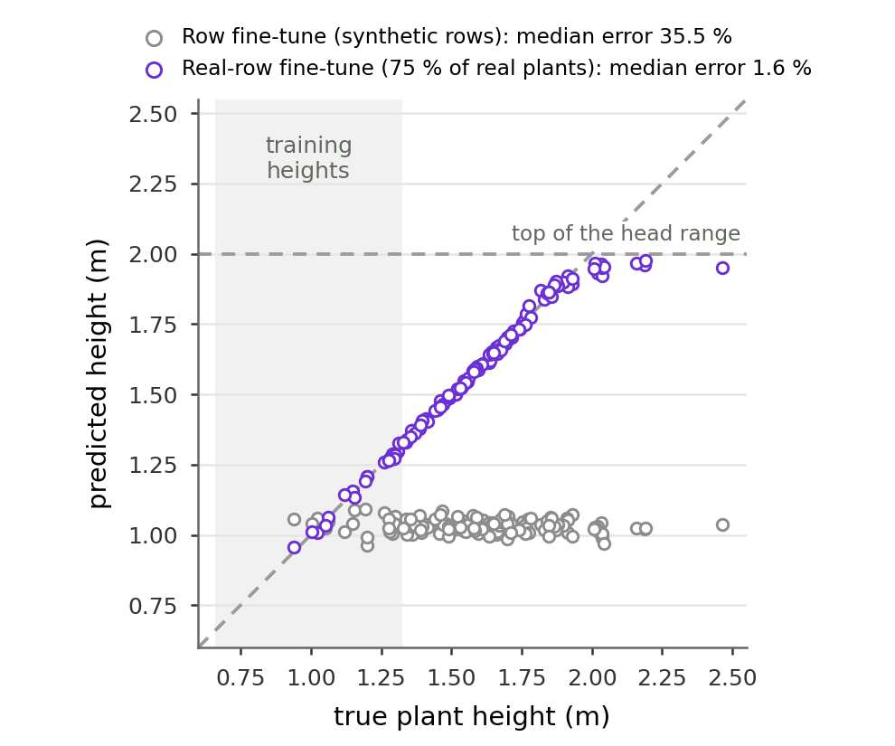</div><figcaption>UGG ideas, our font</figcaption></figure>
    </div>
  </section>
  <section aria-labelledby="h-fig-scaling">
    <h2 id="h-fig-scaling">Data and model scaling</h2>
    <p>Hollow markers, legend on top, minimal axes.</p>
    <div class="pair">
      <figure class="paper"><div class="figbox">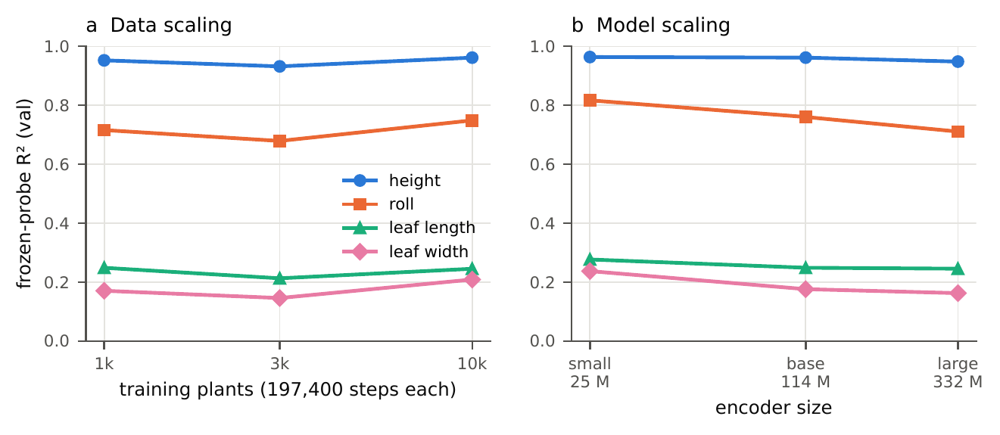</div><figcaption>Current paper</figcaption></figure>
      <figure class="ugg"><div class="figbox">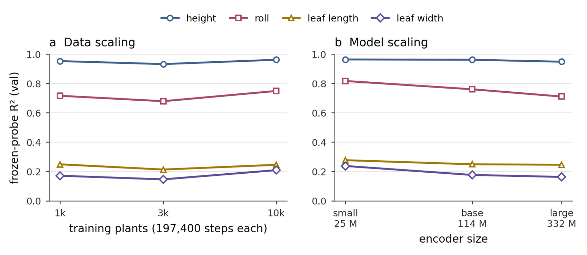</div><figcaption>UGG ideas, our font</figcaption></figure>
    </div>
  </section>
  <section aria-labelledby="h-supp-rows-sorghum">
    <h2 id="h-supp-rows-sorghum">Supplement · Sorghum rows, ten plants</h2>
    <p><b>In the paper.</b> Same changes as Fig. 5: UGG boxes, "Ground truth", "CD = …" in each prediction tile, and block headers "Broadside" / "End-on" without degrees.</p>
    <div class="pair">
      <figure class="paper"><div class="figbox">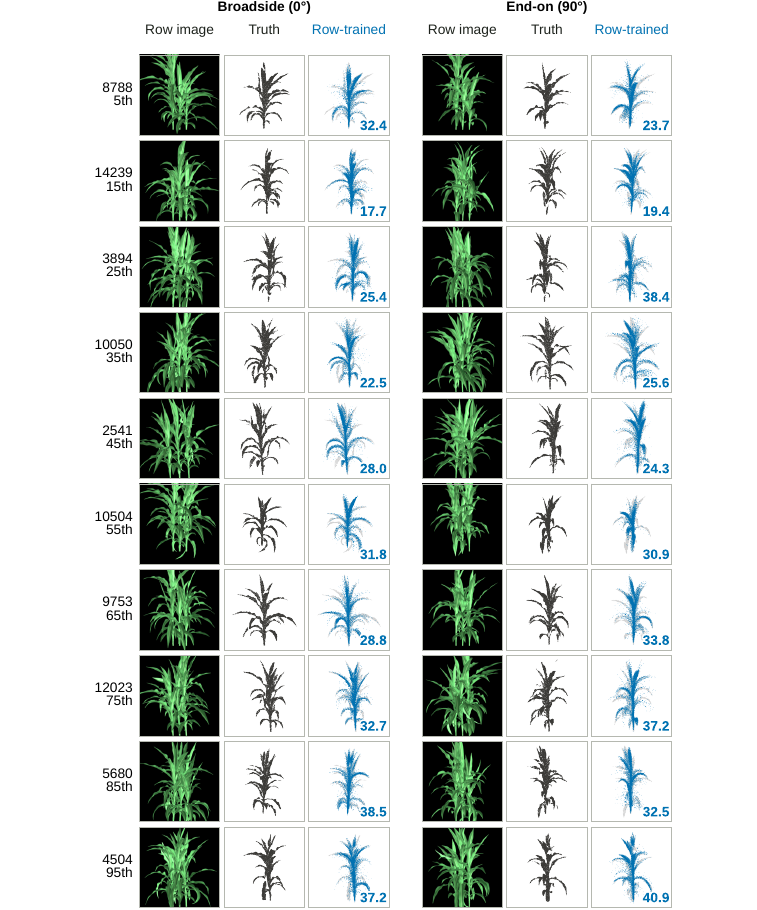</div><figcaption>Previous version</figcaption></figure>
      <figure class="ugg"><div class="figbox">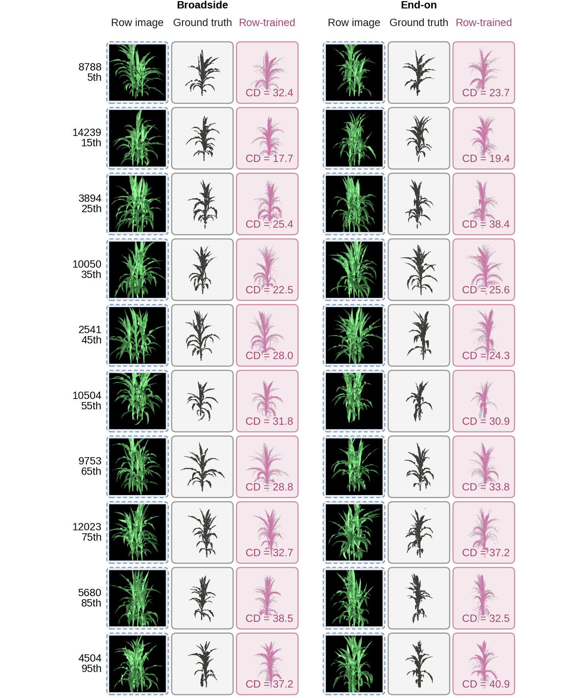</div><figcaption>UGG ideas, in the paper</figcaption></figure>
    </div>
  </section>
  <section aria-labelledby="h-supp-rows-maize">
    <h2 id="h-supp-rows-maize">Supplement · Maize rows, ten plants</h2>
    <p><b>In the paper.</b> Same changes as Fig. 5: UGG boxes, "Ground truth", "CD = …" in each prediction tile, and block headers "Broadside" / "End-on" without degrees.</p>
    <div class="pair">
      <figure class="paper"><div class="figbox">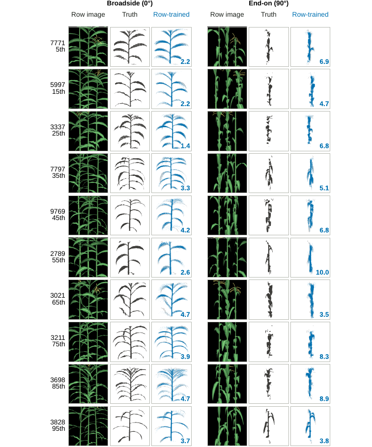</div><figcaption>Previous version</figcaption></figure>
      <figure class="ugg"><div class="figbox">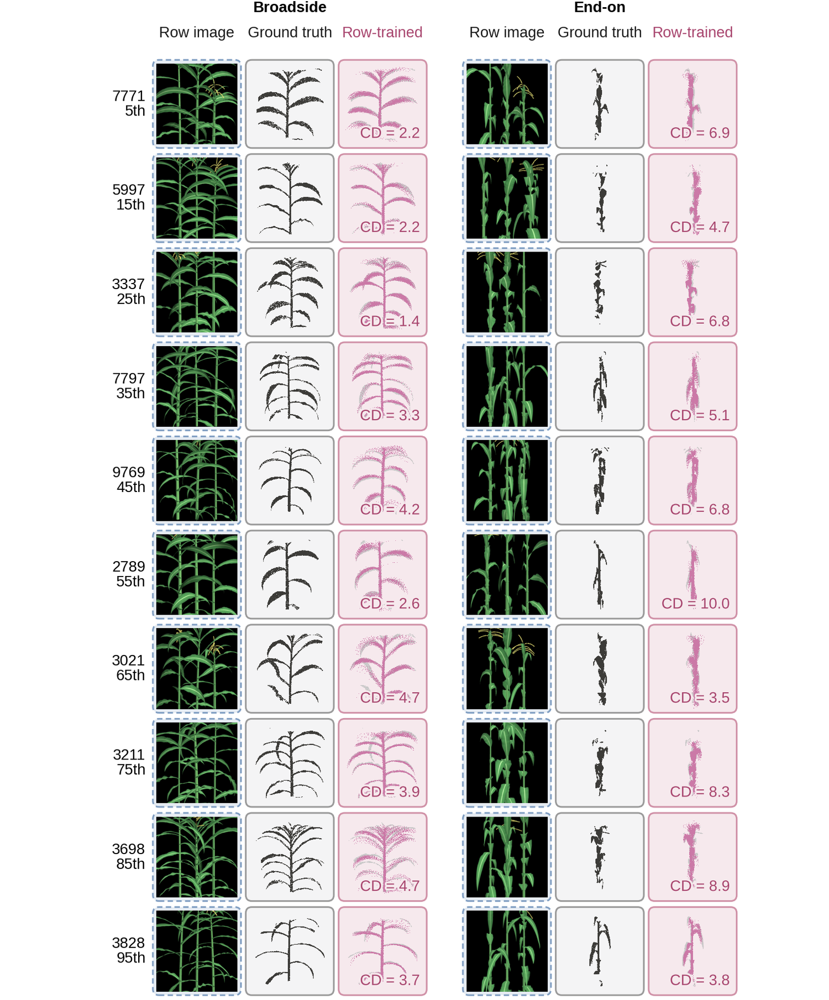</div><figcaption>UGG ideas, in the paper</figcaption></figure>
    </div>
  </section>
  <section aria-labelledby="h-supp-e10-maize">
    <h2 id="h-supp-e10-maize">Supplement · E10 gallery, Maize</h2>
    <p><b>In the paper.</b> Same changes as Fig. 5: one figure instead of hand-assembled tiles, the image in a dashed blue box, "Ground truth" in grey, both model outputs in pink boxes with "CD = …" (the real-row fine-tune, ours, in violet). Every Chamfer was recomputed and matches the published tiles.</p>
    <div class="pair">
      <figure class="paper"><div class="figbox">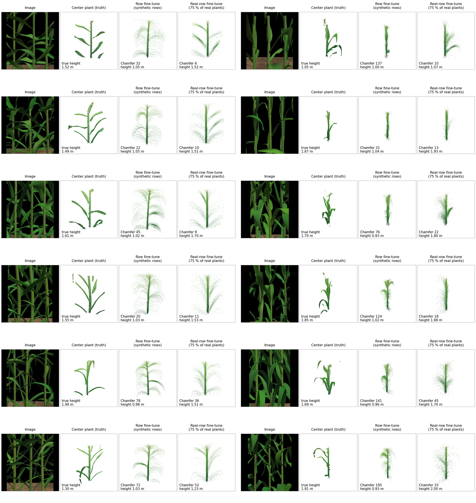</div><figcaption>Previous version</figcaption></figure>
      <figure class="ugg"><div class="figbox">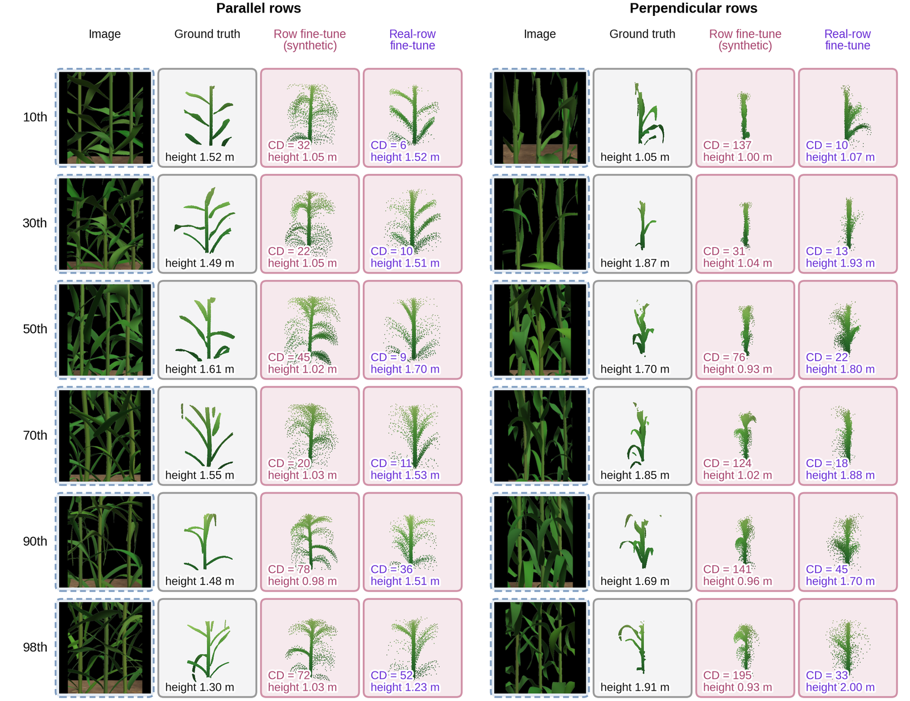</div><figcaption>UGG ideas, in the paper</figcaption></figure>
    </div>
  </section>
  <section aria-labelledby="h-supp-e10-sorghum">
    <h2 id="h-supp-e10-sorghum">Supplement · E10 gallery, Sorghum</h2>
    <p><b>In the paper.</b> Same changes as Fig. 5: one figure instead of hand-assembled tiles, the image in a dashed blue box, "Ground truth" in grey, both model outputs in pink boxes with "CD = …" (the real-row fine-tune, ours, in violet). Every Chamfer was recomputed and matches the published tiles.</p>
    <div class="pair">
      <figure class="paper"><div class="figbox">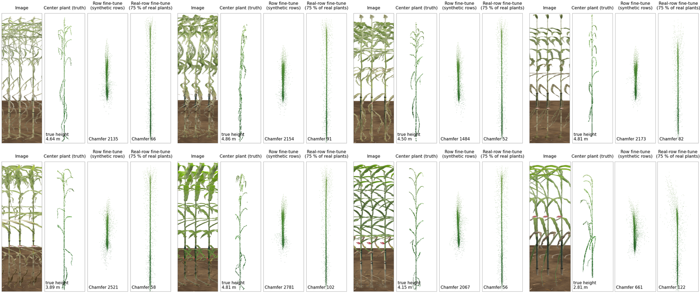</div><figcaption>Previous version</figcaption></figure>
      <figure class="ugg"><div class="figbox">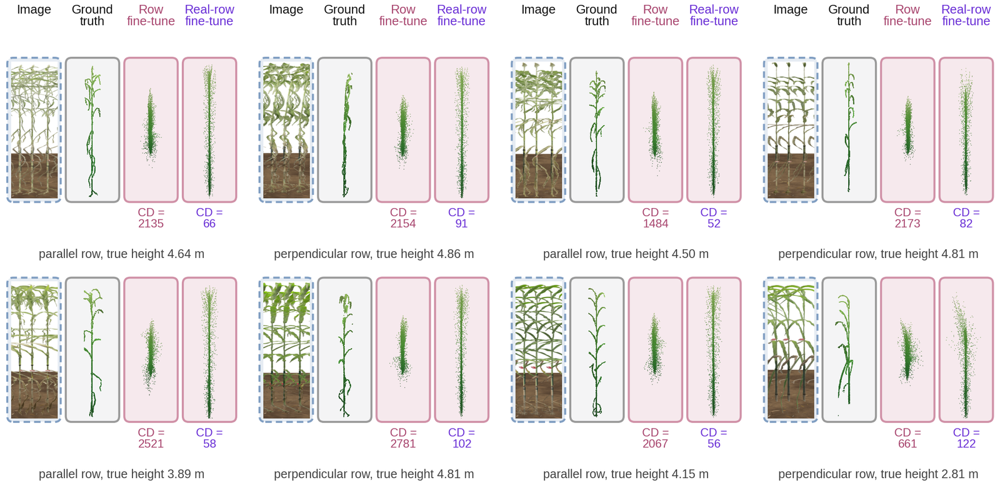</div><figcaption>UGG ideas, in the paper</figcaption></figure>
    </div>
  </section>
  <section class="notes" aria-labelledby="h-notes">
    <h2 id="h-notes">What was taken from UGG</h2>
    <ul>
      <li>One soft colour per stream, shared by boxes, token squares and plot series: image blue, depth yellow, point cloud pink, parameters purple. Stream sets take the colour of the stream they add.</li>
      <li>Inputs in dashed boxes, outputs in solid boxes, grey block arrows between them.</li>
      <li>Hidden tokens hatched, visible tokens plain, with a legend; the model block filled with a soft gradient through the stream colours.</li>
      <li>Our model highlighted in violet; baselines and references in greys; dashed grey reference lines.</li>
      <li>Plots: hollow markers, one frameless legend row above the panels, light horizontal grid, no top or right spines.</li>
      <li>Not taken: UGG's serif type (our figures keep their own font), and its table shading (a separate decision for the tables).</li>
    </ul>
  </section>
</main>

<script>
  (function () {
    const seg = document.getElementById('mode');
    function set(v) { document.body.dataset.mode = v; seg.querySelectorAll('button').forEach(b => b.setAttribute('aria-pressed', String(b.dataset.v === v))); }
    seg.addEventListener('click', e => { const b = e.target.closest('button'); if (b) set(b.dataset.v); });
    set('both');
  })();
</script>
